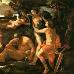

Аполлон, в грецькій міфології син Зевса і титаніди Літо, брат-близнюк незайманої богині полювання Артеміди. Він займав одне з головних місць в грецькій і римській традиції і вважався богом-стріловержця, віщуном, світлоносні покровителем мистецтв.
Аполлон народився на плавучому острові Астерія, що приютив кохану Зевса Літо, якій ревнива Гера заборонила ступати на тверду землю. Будучи ще дитиною, він убив гігантського змія Пифона, стинати Дельф, який був сином матері-землі Геї і через тріщину в скелі передавав свої передбачення. Убивши жахливого Пифона, Аполлон заснував на місці стародавнього прорицалище храм і заснував Пифийские гри.
Відомо, що Зевс, розгніваний незалежною вдачею Аполлона, двічі змушував його прислужувати людям. За вбивство Пифона бог був посланий служити пастухом до царя Адмета в Фессалію, де разом з Гераклом врятував від неминучої смерті дружину царя Алкесту.
Другий раз Аполлон і Посейдон, як учасники змови проти Зевса, в образі смертних служили у троянського царя Лаомедонта. Згідно з міфом, саме вони звели стіни Трої, а потім зруйнували їх, гневаясь на Лаомедонта, який не віддав їм домовленої плати.
Можливо тому в Троянській війні бог-стріловержець допомагав троянцям, і його стріли дев'ять днів несли чуму в табір ахейців. Аполлон, що мав зв'язки з багатьма богинями і смертними жінками, часто бував відкинутий. Його відкинули Дафна, перетворена на її прохання в благородним лавр (з тих пір голову бога прикрашає лавровий вінок), і Кассандра.
Аполлон був прекрасним музикантом; кіфару він отримав від Гермеса в обмін на своїх же корів. Бог був покровителем співаків, був ватажком муз і жорстоко карав тих, хто намагався змагатися з ним. Одного разу Аполлон переміг в музичному змаганні сатира Марсія. Але після змагання Аполлон, оскаженілий лихослів'ям і зухвалістю Марсія, живцем здер з нещасного шкіру. Він вразив своїми стрілами велетня Тітія, який намагався образити Літо, і циклопів, які кували блискавки для Зевса; брав участь він і в битвах олімпійців з гігантами і титанами. Культ Аполлона був широко поширений в Греції, а головним центром його шанування вважався Дельфійський храм з оракулом. У давнину в Дельфах проводилися пишні святкування і змагання, трохи поступалися славним Олімпійських ігор.